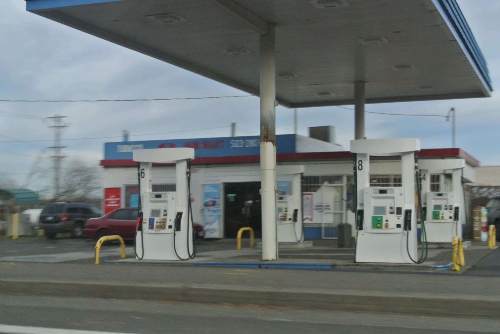
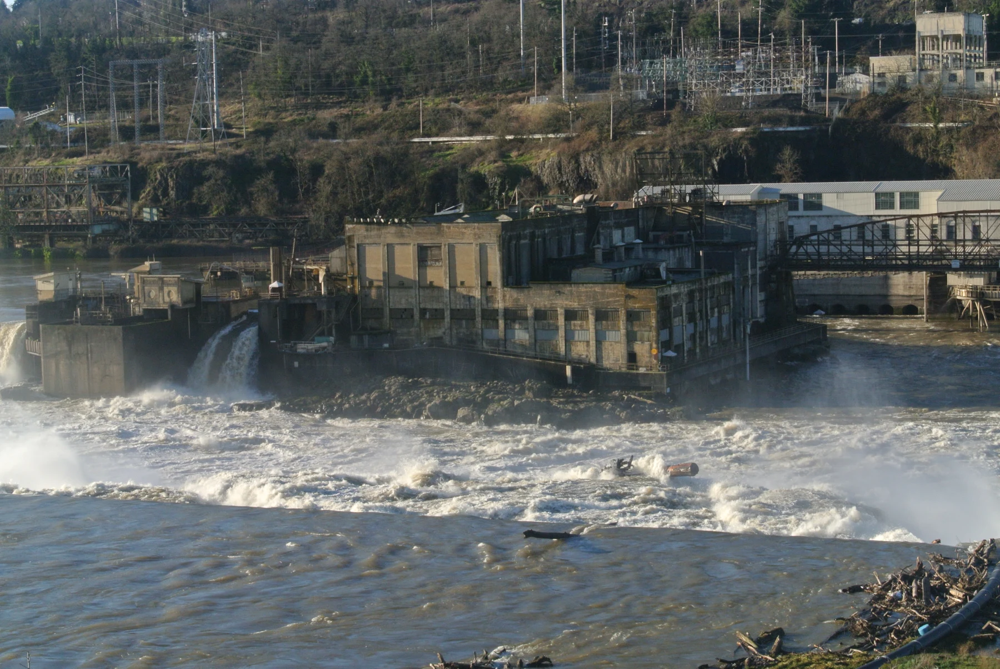
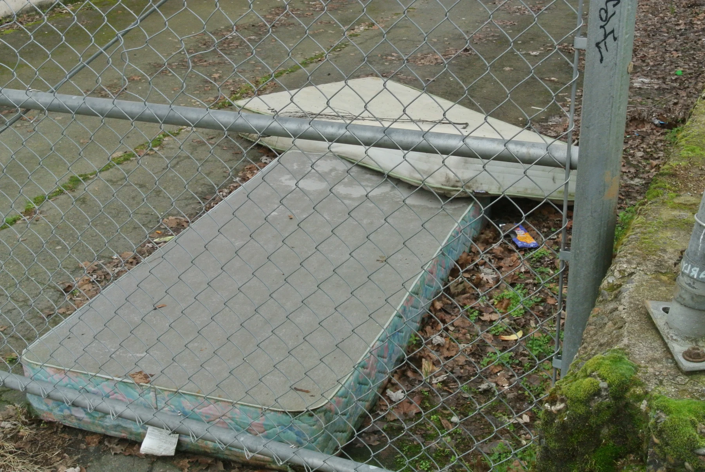
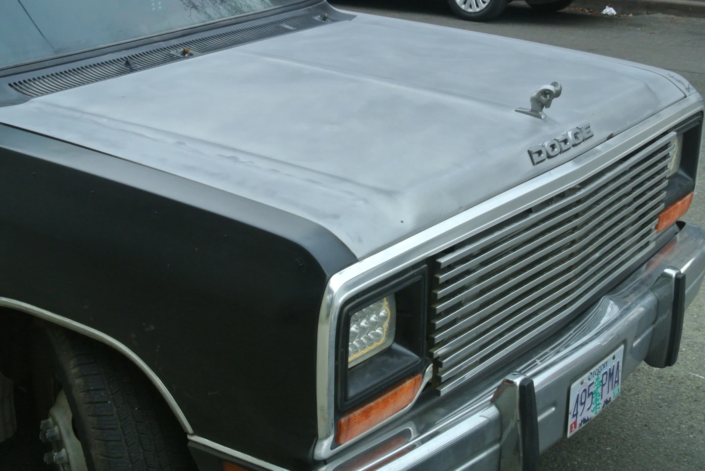
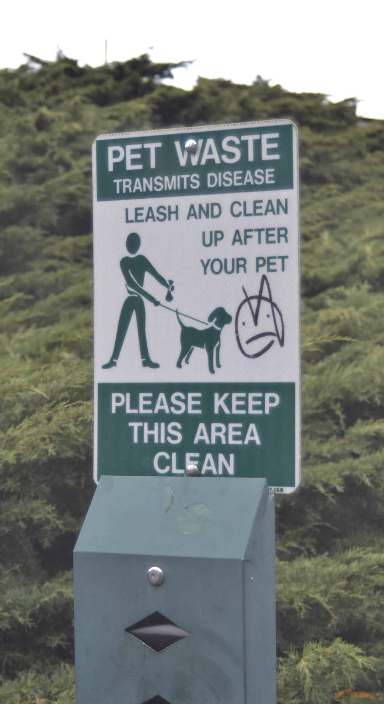

Skip to content
bc
✳
Photography
Projects
About
Contact ↗
← Back to photography
Portland
.
Photography / 05 images

Portland
01 / 05

Portland
02 / 05

Portland
03 / 05

Portland
04 / 05

Portland
05 / 05
Next collection
Milan ↗
Close ×
←
→